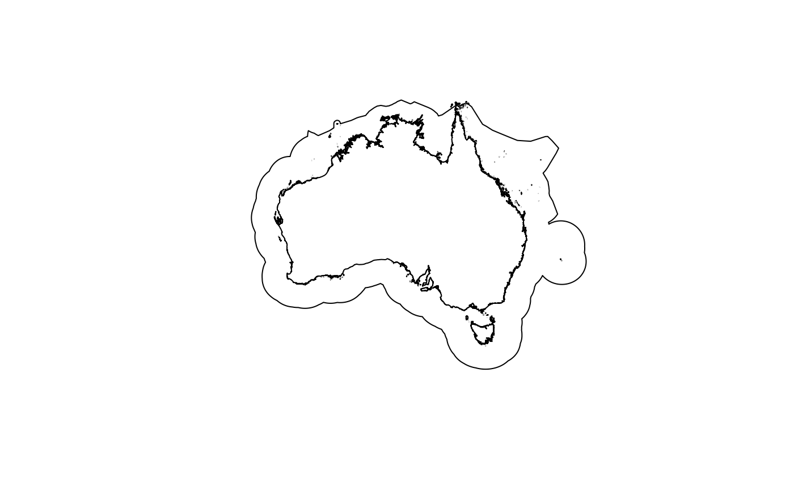
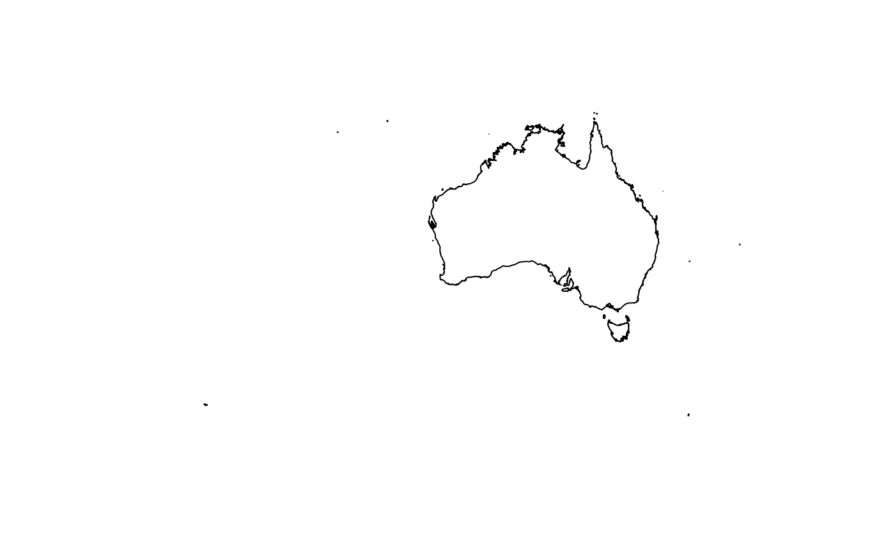

Get boundaries for an area of interest
get_boundary.RdMarine and land boundaries can be obtained. For marine boundaries, the
mrp_get function from the mregions2 package is used to retrieve the
boundary (e.g. an EEZ) from Marine Regions. For land boundaries and the "seas_oceans" type, the
package rnaturalearth is used.
Arguments
- name
charactername of the country or region. IfNULLall boundaries oftypeare returned. If an incorrectnameis input, the user is given a list of valid names to chose from. Ignored fortype = "high_seas"- type
characterthe boundary type. Can be one of:eez: Exclusive Economic Zone (EEZ; 200nm). These EEZs differ slightly from the the UN Convention on the Law of the Sea (UNCLOS) definition because the archipelagic waters and the internal waters of a country are included.12nm: 12 nautical miles zone (Territorial Seas), defined in UNCLOS24nm: 24 nautical miles zone (Contiguous Zone), defined in UNCLOSocean: Global Oceans and Seas as compiled by the Flanders Marine Data Centre. Names are: "Arctic Ocean", "Baltic Sea", "Indian Ocean", "Mediterranean Region", "North Atlantic Ocean", "North Pacific Ocean", "South Atlantic Ocean", "South China and Easter Archipelagic Seas", "South Pacific Ocean", and "Southern Ocean".high_seas: as defined by the UN Law of the Sea: "all parts of the sea that are not included in the exclusive economic zone, in the territorial sea or in the internal waters of a State, or in the archipelagic waters of an archipelagic State". Note thatnameandcountry_typeare not relevant for this query: only all High Seas areas can be downloaded.country: country boundaries from Natural Earthseas_oceans: Seas, oceans, bays, gulfs, inlets etc. as defined in the Natural Earth marine polygons
More details on the marine boundaries can be found on the Marine Regions website, and for land boundaries (plus "seas_oceans"), the Natural Earth website. Note that data from Natural Earth is downlaoded at the highest resolution (1:10m).
- country_type
charactermust be eithercountryorsovereign; ignored fortype = "high_seas","ocean"or"seas_oceans". Some countries have many territories that it has jurisdiction over. For example, Australia, France and the U.K. have jurisdiction over many overseas islands. Usingsovereignreturns the main country and all the territories, whereas usingcountryreturns just the main country. More details about what is a country via thernaturalearthpackage vignette
Examples
#Marine boundary examples:
if(require("mregions2")){
australia_mainland_eez <- get_boundary(name = "Australia")
plot(australia_mainland_eez["geometry"])
#this includes all islands that Australia has jurisdiction over:
australia_including_territories_eez <- get_boundary(name = "Australia", country_type = "sovereign")
plot(australia_including_territories_eez["geometry"])
#South Atlantic Ocean area:
south_atlantic <- get_boundary(name = "South Atlantic Ocean", type = "ocean")
plot(south_atlantic["geometry"])
}
#> Loading required package: mregions2

#Land boundary example:
if(require("rnaturalearth")){
australia_land <- get_boundary(name = "Australia", type = "country")
plot(australia_land["geometry"])
#this includes all islands that Australia has jurisdiction over:
australia_land_and_territories <- get_boundary(name = "Australia", type = "country", country_type = "sovereign")
plot(australia_land_and_territories["geometry"])
#Sea boundary:
coral_sea <- get_boundary(name = "Coral Sea", type = "seas_oceans")
plot(coral_sea["geometry"])
}
#> Loading required package: rnaturalearth

#> Reading layer `ne_10m_geography_marine_polys' from data source
#> `/tmp/RtmpedZw12/ne_10m_geography_marine_polys.shp' using driver `ESRI Shapefile'
#> Simple feature collection with 306 features and 37 fields
#> Geometry type: MULTIPOLYGON
#> Dimension: XY
#> Bounding box: xmin: -180 ymin: -85.19206 xmax: 179.9999 ymax: 90
#> Geodetic CRS: WGS 84
 #
#